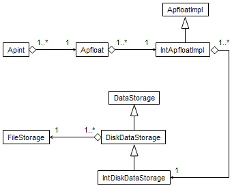
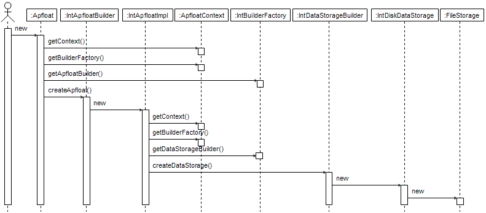
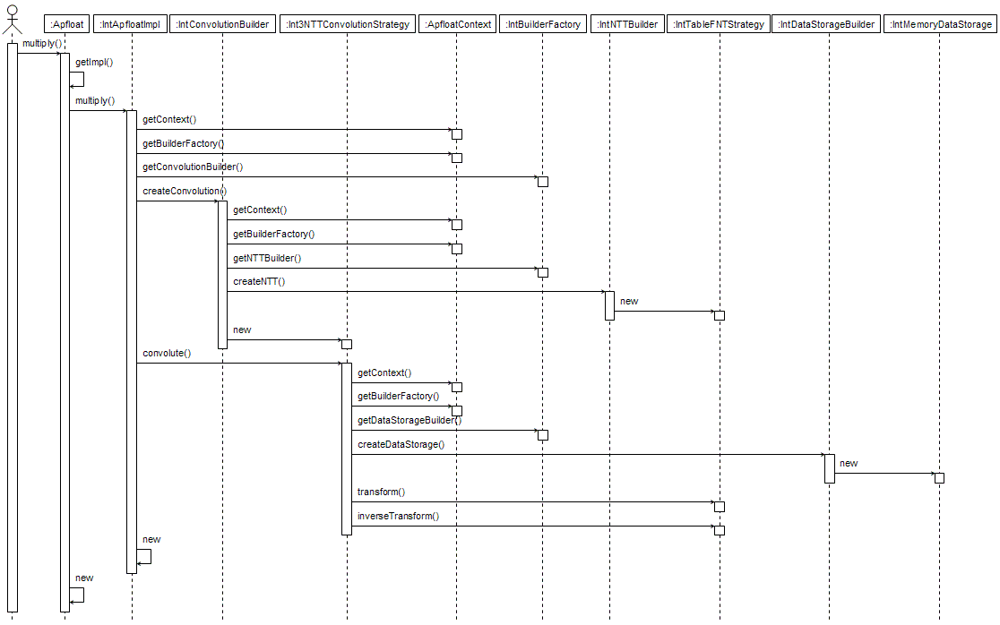

|
|||||||||
| PREV PACKAGE NEXT PACKAGE | FRAMES NO FRAMES | ||||||||
See:
Description
| Interface Summary | |
|---|---|
| DoubleModConstants | Constants needed for various modular arithmetic operations for the double type. |
| DoubleRadixConstants | Constants related to different radixes for the double data type. |
| FloatModConstants | Constants needed for various modular arithmetic operations for the float type. |
| FloatRadixConstants | Constants related to different radixes for the float data type. |
| IntModConstants | Constants needed for various modular arithmetic operations for the int type. |
| IntRadixConstants | Constants related to different radixes for the int data type. |
| LongModConstants | Constants needed for various modular arithmetic operations for the long type. |
| LongRadixConstants | Constants related to different radixes for the long data type. |
| ParallelRunnable | Interface for producing Runnable objects to be run in parallel. |
| Class Summary | |
|---|---|
| DiskDataStorage | Abstract base class for disk-based data storage, containing the common functionality independent of the element type. |
| Double3NTTConvolutionStrategy | Convolution methods in the transform domain for the double type. |
| DoubleApfloatBuilder | Builder class for building ApfloatImpl implementations with the
double data element type. |
| DoubleApfloatImpl | Immutable apfloat implementation class for the
double data element type. |
| DoubleBaseMath | Mathematical operations on numbers in a base. |
| DoubleBuilderFactory | Factory class for getting instances of the various builder classes needed
to build an ApfloatImpl with the double data element type. |
| DoubleCarryCRT | Class for performing the final step of a three-modulus Number Theoretic Transform based convolution. |
| DoubleConvolutionBuilder | Creates convolutions of suitable type for the specified length for the double type. |
| DoubleCRTMath | Basic arithmetic for calculating the Chinese Remainder Theorem. |
| DoubleDataStorageBuilder | Default data storage creation strategy for the double data type. |
| DoubleDiskDataStorage | Disk-based data storage for the double element type. |
| DoubleElementaryModMath | Elementary modulo arithmetic functions for double data. |
| DoubleFactor3NTTStrategy | A transform that implements a 3-point transform on top of another Number Theoretic Transform that does transforms of length 2n. |
| DoubleMatrix | Optimized matrix transposition methods for the double type. |
| DoubleMediumConvolutionStrategy | Medium-length convolution strategy. |
| DoubleMemoryArrayAccess | Array access class based on a double[]. |
| DoubleMemoryDataStorage | Memory based data storage implementation for the double
element type. |
| DoubleModMath | Modulo arithmetic functions for double data. |
| DoubleNTTBuilder | Creates Number Theoretic Transforms suitable for the
specified length and based on available memory, for the
double type. |
| DoubleParallelFNTStrategy | Common methods to calculate Fast Number Theoretic Transforms in parallel using multiple threads. |
| DoubleScramble | Functions to perform bit-reverse ordering of double data. |
| DoubleShortConvolutionStrategy | Short convolution strategy. |
| DoubleSixStepFNTStrategy | Fast Number Theoretic Transform that uses a "six-step" algorithm to calculate a long transform more efficiently on cache-based memory architectures. |
| DoubleTableFNTStrategy | Fast Number Theoretic Transform that uses lookup tables for powers of n:th root of unity and permutation indexes. |
| DoubleTwoPassFNTStrategy | Fast Number Theoretic Transform that uses a "two-pass" algorithm to calculate a very long transform on data that resides on a mass storage device. |
| Float3NTTConvolutionStrategy | Convolution methods in the transform domain for the float type. |
| FloatApfloatBuilder | Builder class for building ApfloatImpl implementations with the
float data element type. |
| FloatApfloatImpl | Immutable apfloat implementation class for the
float data element type. |
| FloatBaseMath | Mathematical operations on numbers in a base. |
| FloatBuilderFactory | Factory class for getting instances of the various builder classes needed
to build an ApfloatImpl with the float data element type. |
| FloatCarryCRT | Class for performing the final step of a three-modulus Number Theoretic Transform based convolution. |
| FloatConvolutionBuilder | Creates convolutions of suitable type for the specified length for the float type. |
| FloatCRTMath | Basic arithmetic for calculating the Chinese Remainder Theorem. |
| FloatDataStorageBuilder | Default data storage creation strategy for the float data type. |
| FloatDiskDataStorage | Disk-based data storage for the float element type. |
| FloatElementaryModMath | Elementary modulo arithmetic functions for float data. |
| FloatFactor3NTTStrategy | A transform that implements a 3-point transform on top of another Number Theoretic Transform that does transforms of length 2n. |
| FloatMatrix | Optimized matrix transposition methods for the float type. |
| FloatMediumConvolutionStrategy | Medium-length convolution strategy. |
| FloatMemoryArrayAccess | Array access class based on a float[]. |
| FloatMemoryDataStorage | Memory based data storage implementation for the float
element type. |
| FloatModMath | Modulo arithmetic functions for float data. |
| FloatNTTBuilder | Creates Number Theoretic Transforms suitable for the
specified length and based on available memory, for the
float type. |
| FloatParallelFNTStrategy | Common methods to calculate Fast Number Theoretic Transforms in parallel using multiple threads. |
| FloatScramble | Functions to perform bit-reverse ordering of float data. |
| FloatShortConvolutionStrategy | Short convolution strategy. |
| FloatSixStepFNTStrategy | Fast Number Theoretic Transform that uses a "six-step" algorithm to calculate a long transform more efficiently on cache-based memory architectures. |
| FloatTableFNTStrategy | Fast Number Theoretic Transform that uses lookup tables for powers of n:th root of unity and permutation indexes. |
| FloatTwoPassFNTStrategy | Fast Number Theoretic Transform that uses a "two-pass" algorithm to calculate a very long transform on data that resides on a mass storage device. |
| Int3NTTConvolutionStrategy | Convolution methods in the transform domain for the int type. |
| IntApfloatBuilder | Builder class for building ApfloatImpl implementations with the
int data element type. |
| IntApfloatImpl | Immutable apfloat implementation class for the
int data element type. |
| IntBaseMath | Mathematical operations on numbers in a base. |
| IntBuilderFactory | Factory class for getting instances of the various builder classes needed
to build an ApfloatImpl with the int data element type. |
| IntCarryCRT | Class for performing the final step of a three-modulus Number Theoretic Transform based convolution. |
| IntConvolutionBuilder | Creates convolutions of suitable type for the specified length for the int type. |
| IntCRTMath | Basic arithmetic for calculating the Chinese Remainder Theorem. |
| IntDataStorageBuilder | Default data storage creation strategy for the int data type. |
| IntDiskDataStorage | Disk-based data storage for the int element type. |
| IntElementaryModMath | Elementary modulo arithmetic functions for int data. |
| IntFactor3NTTStrategy | A transform that implements a 3-point transform on top of another Number Theoretic Transform that does transforms of length 2n. |
| IntMatrix | Optimized matrix transposition methods for the int type. |
| IntMediumConvolutionStrategy | Medium-length convolution strategy. |
| IntMemoryArrayAccess | Array access class based on a int[]. |
| IntMemoryDataStorage | Memory based data storage implementation for the int
element type. |
| IntModMath | Modulo arithmetic functions for int data. |
| IntNTTBuilder | Creates Number Theoretic Transforms suitable for the
specified length and based on available memory, for the
int type. |
| IntParallelFNTStrategy | Common methods to calculate Fast Number Theoretic Transforms in parallel using multiple threads. |
| IntScramble | Functions to perform bit-reverse ordering of int data. |
| IntShortConvolutionStrategy | Short convolution strategy. |
| IntSixStepFNTStrategy | Fast Number Theoretic Transform that uses a "six-step" algorithm to calculate a long transform more efficiently on cache-based memory architectures. |
| IntTableFNTStrategy | Fast Number Theoretic Transform that uses lookup tables for powers of n:th root of unity and permutation indexes. |
| IntTwoPassFNTStrategy | Fast Number Theoretic Transform that uses a "two-pass" algorithm to calculate a very long transform on data that resides on a mass storage device. |
| Long3NTTConvolutionStrategy | Convolution methods in the transform domain for the long type. |
| LongApfloatBuilder | Builder class for building ApfloatImpl implementations with the
long data element type. |
| LongApfloatImpl | Immutable apfloat implementation class for the
long data element type. |
| LongBaseMath | Mathematical operations on numbers in a base. |
| LongBuilderFactory | Factory class for getting instances of the various builder classes needed
to build an ApfloatImpl with the long data element type. |
| LongCarryCRT | Class for performing the final step of a three-modulus Number Theoretic Transform based convolution. |
| LongConvolutionBuilder | Creates convolutions of suitable type for the specified length for the long type. |
| LongCRTMath | Basic arithmetic for calculating the Chinese Remainder Theorem. |
| LongDataStorageBuilder | Default data storage creation strategy for the long data type. |
| LongDiskDataStorage | Disk-based data storage for the long element type. |
| LongElementaryModMath | Elementary modulo arithmetic functions for long data. |
| LongFactor3NTTStrategy | A transform that implements a 3-point transform on top of another Number Theoretic Transform that does transforms of length 2n. |
| LongMatrix | Optimized matrix transposition methods for the long type. |
| LongMediumConvolutionStrategy | Medium-length convolution strategy. |
| LongMemoryArrayAccess | Array access class based on a long[]. |
| LongMemoryDataStorage | Memory based data storage implementation for the long
element type. |
| LongModMath | Modulo arithmetic functions for long data. |
| LongNTTBuilder | Creates Number Theoretic Transforms suitable for the
specified length and based on available memory, for the
long type. |
| LongParallelFNTStrategy | Common methods to calculate Fast Number Theoretic Transforms in parallel using multiple threads. |
| LongScramble | Functions to perform bit-reverse ordering of long data. |
| LongShortConvolutionStrategy | Short convolution strategy. |
| LongSixStepFNTStrategy | Fast Number Theoretic Transform that uses a "six-step" algorithm to calculate a long transform more efficiently on cache-based memory architectures. |
| LongTableFNTStrategy | Fast Number Theoretic Transform that uses lookup tables for powers of n:th root of unity and permutation indexes. |
| LongTwoPassFNTStrategy | Fast Number Theoretic Transform that uses a "two-pass" algorithm to calculate a very long transform on data that resides on a mass storage device. |
| ParallelRunner | Class for running Runnable objects in parallel using multiple threads. |
| Scramble | Functions to perform bit-reverse ordering of data. |
Default implementations of the apfloat Service Provider Interface (SPI).
The org.apfloat.internal package contains four different
implementations of the apfloat SPI, each based on a different primitive
element type:
IntBuilderFactory, based on element type
int: This is the default implementation used by apfloat.
It works well for 32-bit platforms that perform integer operations fast
(including integer multiplication), and can multiply doubles
and convert between double and int with adequate
performance. This applies to most workstations today (Intel x86 processors
and compatibles, in particular processors with SSE2 support, and most RISC
architectures). You can do calculations up to roughly 226 million digits
(in radix 10) with this implementation, which should be enough for most
purposes.LongBuilderFactory, based on element type
long: This implementation uses the 64-bit long
integer as the elementary type for all data storage and manipulation. It
should perform well on 64-bit architectures if you have a JVM that actually
uses the 64-bit features of the processor. In some places it uses
also double arithmetic, so the processor should be able
to perform double-precision floating point operations as well as convert
between double and long, for decent performance.
For example, on SPARC Solaris the 64-bit long version is
often faster than the 32-bit int version. You can use the
long implementation on 32-bit platforms too, however the
performance per element is less than half of the int version,
even if roughly twice as much data is processed per element. The upside
is that this implementation can do much bigger calculations: up to about
3.5 * 1015 digits in radix 10.DoubleBuilderFactory, based on element type
double: This implementation exists generally only as a
curiosity. It will typically perform worse than the long
version, and it's only able to do calculations with about 1/20 of its
maximum digit length. The only situation where using the double
version might make sense is on a platform that performs floating-point
arithmetic well, but performs integer arithmetic extremely badly. Finding
such a platform today might be difficult, so generally it's advisable to
use the long version instead, if you have a 64-bit platform
or need the most extreme precision.FloatBuilderFactory, based on element type
float: This version is also only a curiosity. The main
downside is that it can only perform calculations up to about 1.3
million radix-10 digits. The per-digit performance is also typically
less than that of the int version. Unless you have a
computer that performs floating-point arithmetic extraordinarily well
compared to integer arithmetic, it's always advisable to use the
int version instead.
| Type | Pentium 4 | Athlon XP | Athlon 64 (32-bit) | Athlon 64 (64-bit) | UltraSPARC II |
|---|---|---|---|---|---|
| Int | 100% | 100% | 100% | 100% | 100% |
| Long | 40% | 76% | 59% | 95% | 132% |
| Double | 45% | 63% | 59% | 94% | 120% |
| Float | 40% | 43% | 46% | 42% | 82% |
Compared to the java.math.BigInteger class with different digit
sizes, the apfloat relative performance with the same CPUs is as follows:
(Test was done with apfloat 1.1 using Sun's Java 5.0 server VM calculating 3n and converting the result to decimal.)
This benchmark suggests that for small numbers – less than roughly 200 decimal
digits in size – the BigInteger / BigDecimal classes
are probably faster, even by an order of magnitude. Using apfloats is only beneficial
for numbers that have at least a couple hundred digits, or of course if some
mathematical functions are needed that are not available for BigIntegers
or BigDecimals. The results can be easily explained by the smaller overhead
that BigIntegers have due to their simpler implementation. When the size
of the mantissa grows, the O(n log n) complexity of apfloat's FFT-based multiplication
makes apfloat considerably faster than the steady O(n2) implementation
of the BigInteger class. For numbers with millions of digits,
multiplication using BigIntegers would be simply unfeasible, whereas for
apfloat it would not be a problem at all.
All of the above apfloat implementations have the following features (the links point
to the int version, but all four versions have similar classes):
IntMemoryDataStorage) or on disk
(IntDiskDataStorage).IntShortConvolutionStrategy),
using a simple O(n2) "schoolboy" algorithm for small numbers,
with low overhead (IntMediumConvolutionStrategy),
or using a Number Theoretic Transform (NTT) done using three different moduli,
and the final result calculated using the Chinese Remainder Theorem
(Int3NTTConvolutionStrategy), for big numbers.IntTableFNTStrategy) when the entire transform
fits in the processor cache, "six-step" NTT when the transform fits in the
main memory (IntSixStepFNTStrategy),
and a disk-based "two-pass" NTT strategy when the whole transform doesn't
fit in the available memory (IntTwoPassFNTStrategy).*.ap
and they are created in the current working directory. When garbage collection
finalizes the objects, the temporary files are deleted. However, garbage collection
may not work perfectly at all times, and in general there are no guarantees that
it will happen at all. So, depending on the program being executed, it may be
beneficial to explicitly call System.gc() at some point to ensure
that unused temporary files are deleted. However, VM vendors generally warn
against doing this too often, since it may seriously degrade performance. So,
figuring out how to optimally call it may be difficult. If the file deletion fails
for some reason, some temporary files may be left on disk after the program
exits. These files can be safely removed after the program has terminated.
Since the core functionality of the apfloat implementation is based on the
original C++ version of apfloat, no significant new algorithms have been
added (although the architecture has been otherwise greatly beautified e.g. by
separating the different implementations behind a SPI, and applying all kinds
of patterns everywhere). Thus, there are no different implementations for e.g.
using a floating-point FFT instead of a NTT, as the SPI (org.apfloat.spi)
might suggest. However the default implementation does implement all the
patterns suggested by the SPI – in fact the SPI was designed for the
default implementation.
The class diagram for an example apfloat that is stored on disk is shown below.
Note that all the aggregate classes can be shared by multiple objects that point
to the same instance. For example, multiple Apfloats can point to the same
ApfloatImpl, multiple ApfloatImpls can point to the same DataStorage etc. This
sharing happens in various situations, e.g. by calling floor(),
multiplying by one etc:

The sequence diagram for creating a new apfloat that is stored on disk is as follows. Note that the FileStorage class is a private inner class of the DiskDataStorage class:

The sequence diagram for multiplying two apfloats is as follows. In this case a NTT based convolution is used, and the resulting apfloat is stored in memory:

Most of the files in the apfloat implementations are generated from templates
where a template tag is replaced by int/long/float/double or
Int/Long/Float/Double. Also the byte size of the element type is
templatized and replaced by 4/8/4/8. The only files that are individually
implemented for each element type are:
*BaseMath.java *CRTMath.java *ElementaryModMath.java *ModConstants.java
org.apfloat.spi
|
|||||||||
| PREV PACKAGE NEXT PACKAGE | FRAMES NO FRAMES | ||||||||